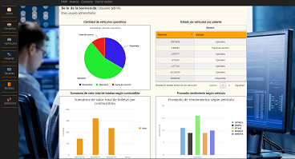

FMP V1.1

FMP es un proyecto de gestión de registros para el control y monitoreo de combustibles de flotas utilizados de una empresa.
Fuel Monitoring Project (FMP) es una aplicación web responsiva que busca resolver la problemática de la falta de registros de información respecto a combustibles de los vehículos utilizados en una empresa, con el fin de obtener a disposición en cualquier momento esta información sincronizada para su control y monitoreo.
La versión 1.1 trae un nuevo diseño, nuevas funcionalidades, mejoras de los servicios principales y resuelve los problemas identificados en la versión anterior.
